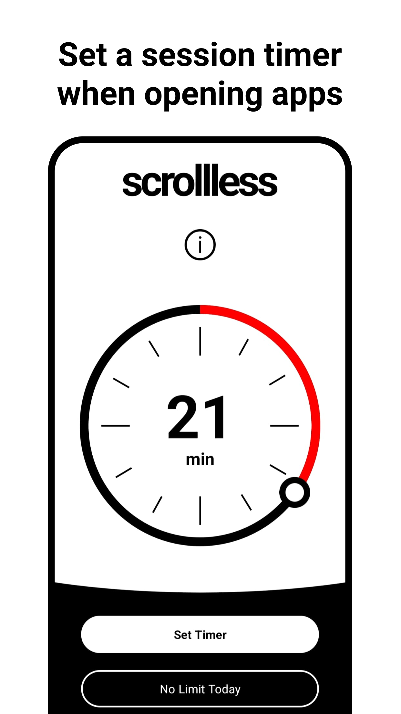
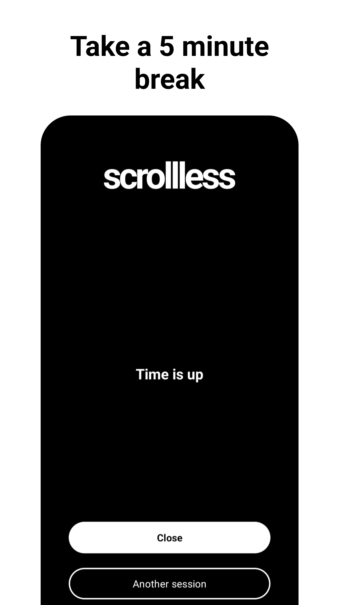
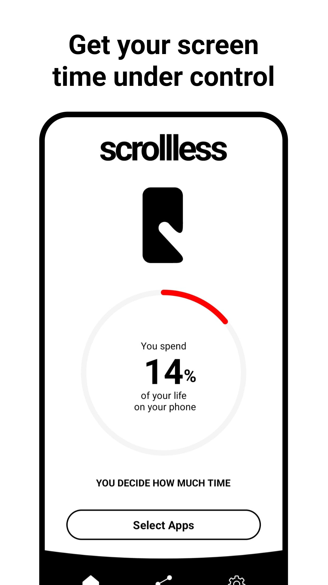
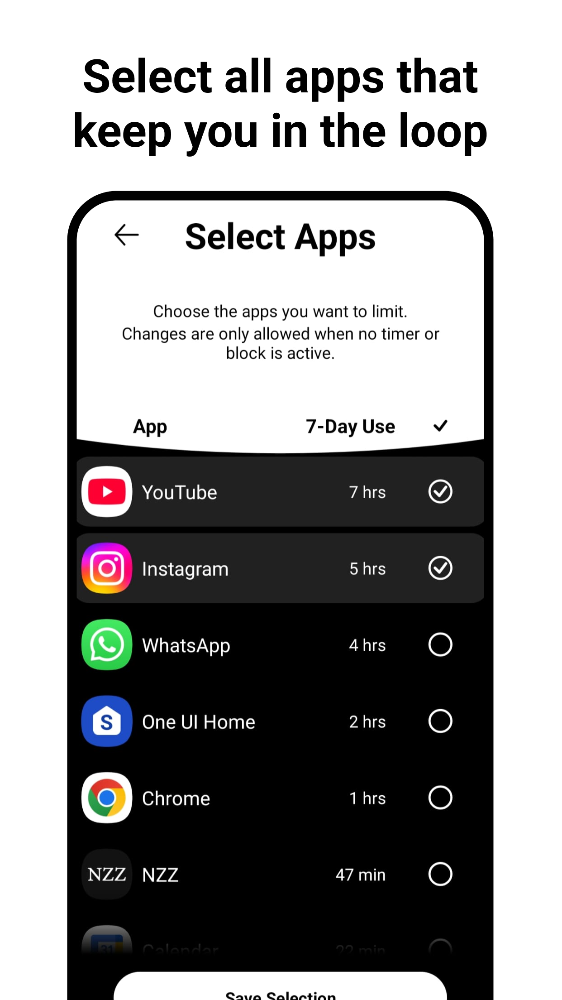
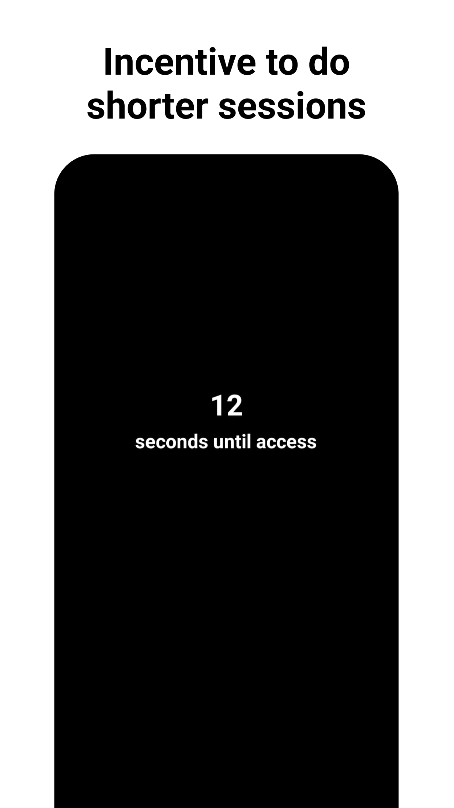

Scrollless (Scroll Less) - Break Free from Social Media Addiction and Doomscrolling
Stop scrolling too much, being on your phone for too long, and can't stop using your phone - Scrollless helps you control phone addiction

Break free from endless scrolling and social media addiction.
Break the doomscrolling cycle
It's 1 AM. You told yourself "just five more minutes" an hour ago. You close Instagram — and open YouTube. Then TikTok. The native screen time tools? You just tap through them. Other apps lock you out for the day, but when you actually have a few minutes to spare, they won't let you in.
Scrollless takes a different approach. Instead of blocking you, it asks one simple question: "How long do you want to use this app?" You set the time, enjoy your session, then take a 5-minute break. It's a contract with yourself — flexible, respectful, and effective.
Why Scrollless?
Most screen time apps punish you. Scrollless empowers you.
Intentional, Not Restrictive
You choose how long you want to scroll — like making a promise to yourself. No surprise lockouts, no fighting your own phone.
Blocks the App Switch
Close Instagram, open YouTube, switch to TikTok — sound familiar? Scrollless blocks all your selected apps at once, so the loop stops.
Smart Incentives
Pick a short timer and get instant access. Pick a long one? Brief wait first. This gentle nudge helps you choose mindfully, not automatically.
Key Features
Custom Session Timers
Set a time limit for each session on your restricted apps. When it's up, you take a break — then you can start a new session whenever you're ready.
Smart Breaks
Five-minute mandatory breaks between sessions give your brain a chance to reset. Long enough to break the habit loop, short enough to not frustrate you.
No Daily Limits
Unlike other apps, Scrollless doesn't punish you with a daily cap. Use your phone as much as you need — just in healthier, intentional sessions.
Science-Inspired
Built on principles from habit formation research, decision fatigue studies, and commitment device theory. Designed to work with your psychology, not against it.
Cross-App Blocking
All your restricted apps are blocked together during breaks. No more switching from Instagram to YouTube to TikTok when one app gets blocked.
Free & Open
Scrollless is completely free to use. Supported by minimal, non-intrusive ads — and if you prefer no ads at all, you can remove them with a one-time purchase.
See it in action





What users say
Real feedback from real users.
Your app is genius! I've been using it for 2 weeks and the concept is so good — you don't forbid yourself from using your phone, you just use it with intention. That's exactly what I needed!
Scrollless really works for me. I've been using it for a month now and it solves the problem way better than other apps I've been switching between for over 5 years. Keep going!
reduction reported
Built by a fellow scrolling addict
I started building Scrollless over two years ago in Singapore because I couldn't find an app that actually worked for me. I'd procrastinate for hours, especially at night when no one was there to stop me. Native screen time tools were too easy to dismiss. Other apps set strict daily limits — but weren't strict enough in the moment.
So I built what I needed: something that respects your freedom but holds you accountable in the moment. Today I'm a Master's student at the University of St. Gallen, and my goal is to keep Scrollless free and useful for everyone.
Frequently Asked Questions
Everything you need to know about Scrollless.
When you open a restricted app like Instagram, TikTok, or YouTube, Scrollless asks how long you want to use it. You set a timer, enjoy your session, and then take a mandatory 5-minute break. This approach breaks the automatic scrolling habit by making phone use intentional rather than mindless.
Yes, Scrollless is completely free to download and use. It's supported by minimal, non-intrusive ads. If you'd prefer an ad-free experience, you can remove ads with a one-time in-app purchase.
Android's Digital Wellbeing sets daily time limits that are easy to dismiss with a single tap. Scrollless works per-session instead of per-day, blocks all restricted apps simultaneously (so you can't switch from Instagram to YouTube), and uses smart incentives to encourage shorter sessions. It's designed to be harder to ignore in the moment when willpower is low.
Yes! Scrollless works with any app on your phone. You choose which apps to restrict — whether that's social media apps like Instagram, TikTok, YouTube, Snapchat, or even games and other time-consuming apps.
No. Scrollless runs efficiently in the background and only activates when you open a restricted app. It uses minimal resources and has negligible impact on battery life.
Currently, Scrollless is only available for Android on the Google Play Store. An iOS version is not available at this time due to Apple's restrictions on the type of background access Scrollless needs to function.
Ready to scroll with intention?
Take back control of your screen time — for free.
Download on the Play Store